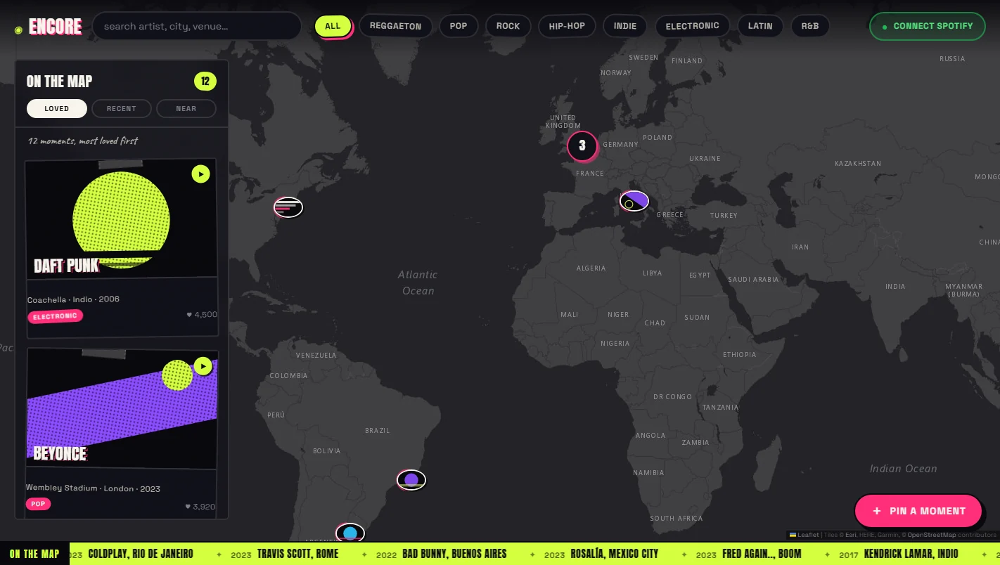

Software & Web2026
Encore
A map for the live-music moments you want to keep.
See it in action
Project preview
A view of the working project. Open the demo to explore it.
The challenge
Make live-music memories explorable by place, artist and moment.
The idea
Pair a world map with a browsable feed: open a performance, add a memory and share its location and story.
The build
JavaScript modules and Leaflet power the map. A scheduled MusicBrainz pipeline supplies performance data, while shared validation handles custom pins and links. A keyboard-accessible feed offers another route through the map.
What came out of it
A working map with search, filters, persistent pins and shareable moments. The listening-profile feature uses sample data; it does not connect to a personal Spotify account.
More technical detail in the project repository. Implementation notes ↗